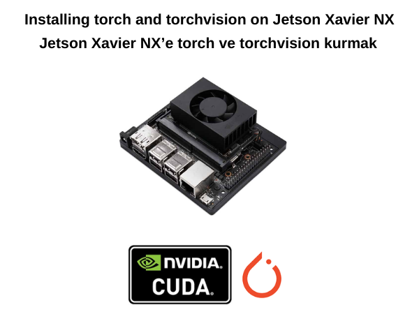
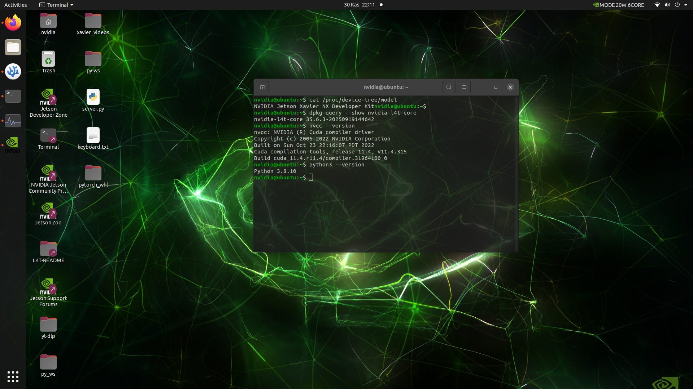

Jetson Makinenize Uygun Sürümde Pytorch Kurulumu

Bu yazıda Jetson Xavier NX makinenize nasıl GPU kullanan torch ve torchvision kütüphaneleri kurabileceğinizi ve diğer jetson modellerine de nasıl uyarlanabileceği açıklanmıştır.
Jetson Xavier NX için
Aşağıdaki fotoğrafta bizim Jetson Xavier NX makinemizin özellikleri yazmakta. Siz de bu komutları girerek kontrol edebilirsiniz.

venv Kur (opsiyonel)
Eğer farklı dizilerde farklı sürümlerde pytorch kullanacaksanız ya da global kurmak istemiyorsanız sanal ortam kurmanızı öneririz.
$python3 -m venv <venv_adi>
$source <venv_adi>/bin/activateKurulum
Öncelikle sistem bağımlılıklarını kurmanız gerekmektedir.
$sudo apt-get -y update
$sudo apt-get -y python3-pip libopenblas-devSizin için wheel dosyalarını hazırladık, aşağıdaki butona tıklayarak wheel dosyalarını indirebilir ve kurulumu tamamlayabilirsiniz.
↓ Torch ve Torchvision Wheel Drive$pip install <torch_wheel_adi>.whl
$pip install <torchvision_wheel_adi>.whlBir Python kodu ile test et:
import torch
import torchvision
print(torch.__version__)
print(torchvision.__version__)Diğer Jetson Modelleri için
NVIDIA DocsTorchvision indirmeden önce torch kurulu olmalı.
$pip install <torch_wheel_adi>.whlSource'dan build edeceğiz.
$git clone https://github.com/pytorch/vision.git
$cd torchvision
$sudo apt update
$sudo apt install -y python3-dev python3-pip libjpeg-dev libpng-dev
$pip3 install --upgrade pip setuptools wheel
$python3 setup.py bdist_wheel./dist/torchvision-*.whl dosya yolunda olan wheel dosyasını kuracağız.
$pip3 install dist/torchvision-*.whl